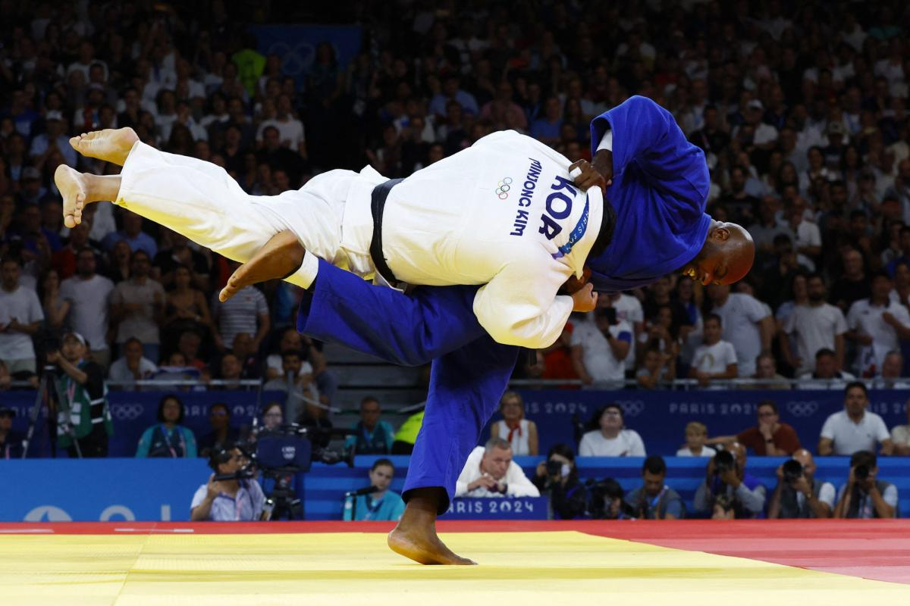

Interests
Back FrançaisJudo

I started training Judo three years ago at EJM Mauguio Castries, and it quickly became a major part of my life. I've competed regularly and gotten involved in volunteer work and coaching at the club.
Music
A passion passed down from my mother since childhood. Listening to music is now one of my favorite pastimes. I enjoy all genres but mainly alternative rock and rap. Here are three of my favorite albums.
Listen on Spotify: